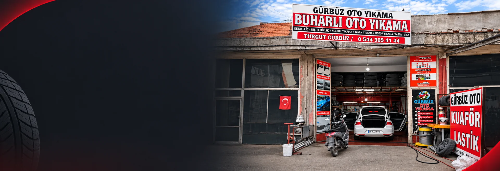
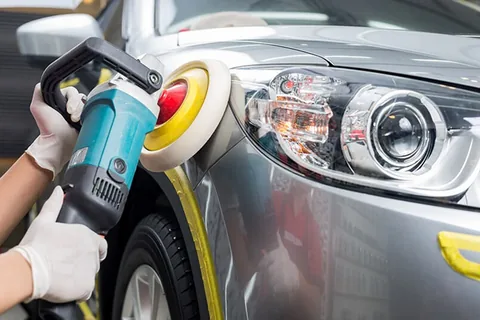
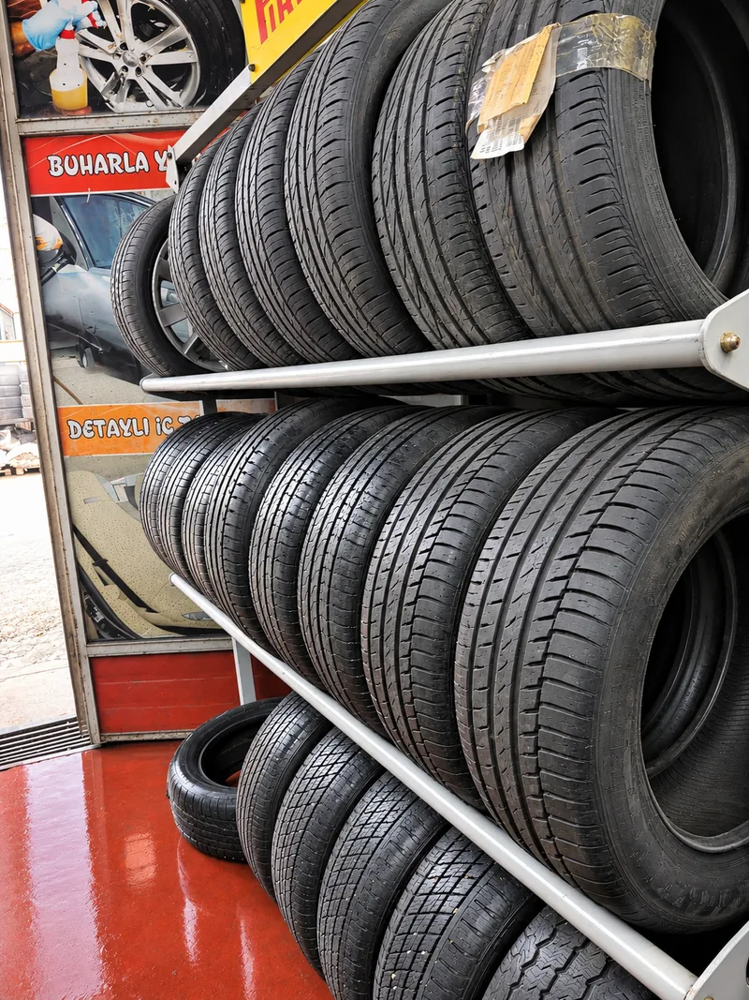
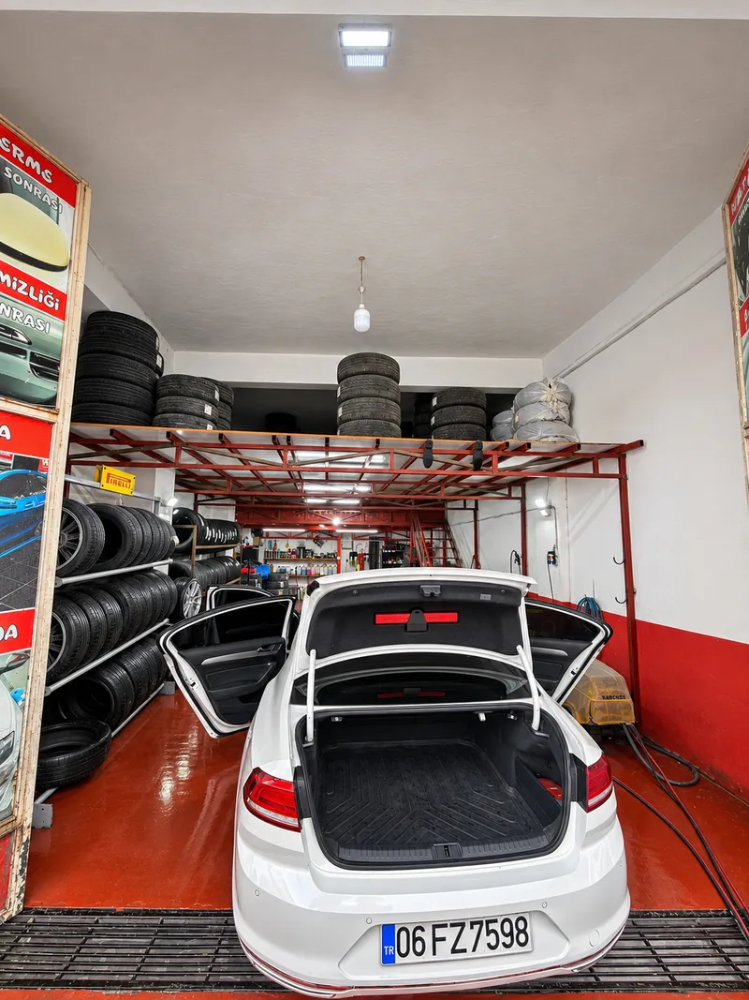
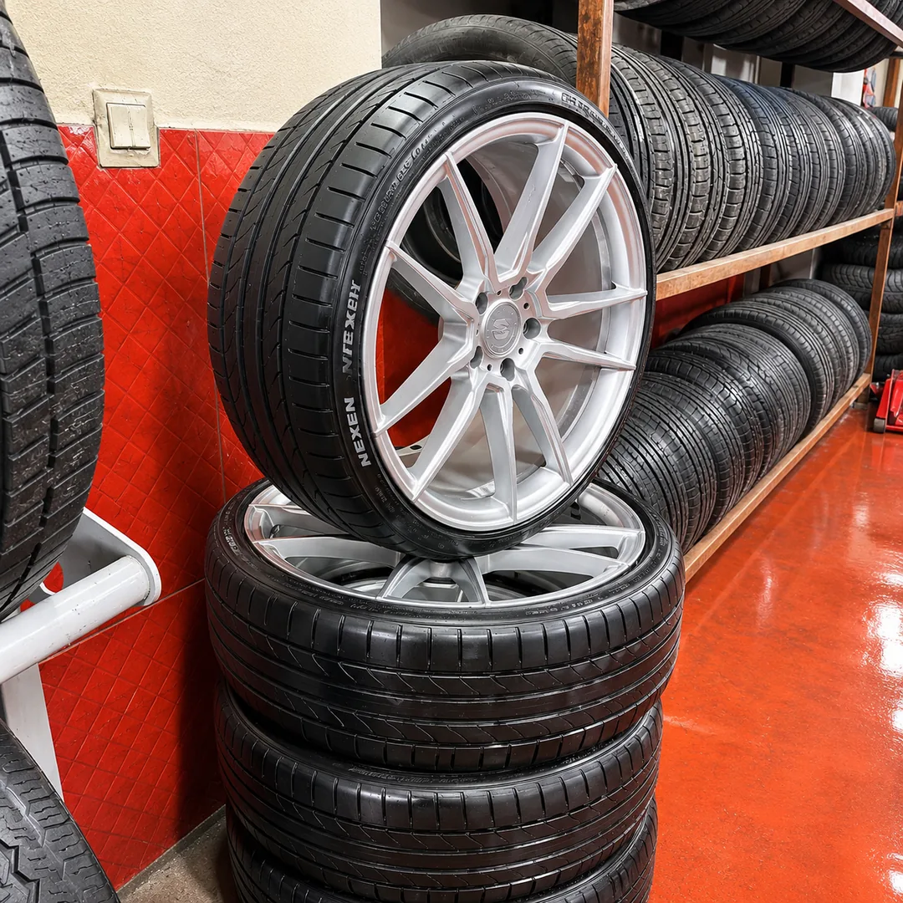
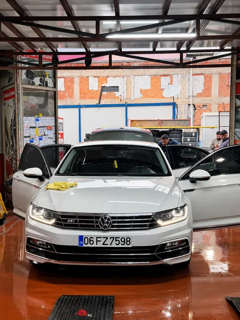
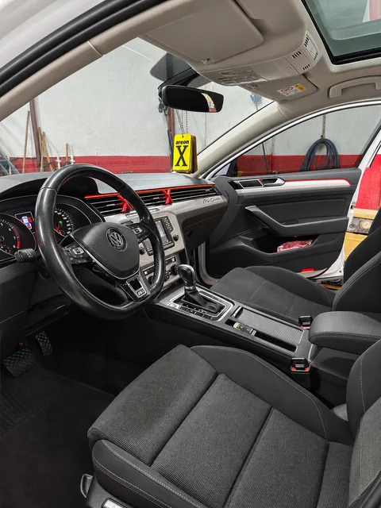
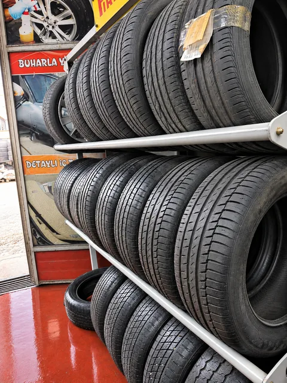
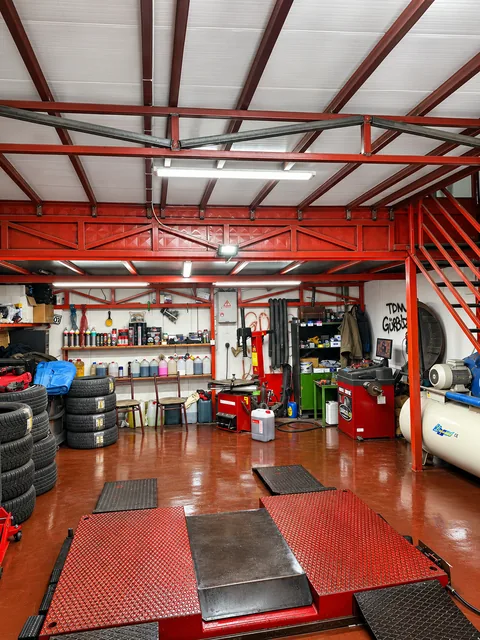

İç & dış bakım
İç & dış bakımOto Yıkama
Günlük yol izlerinden arınan bir görünüm. İç ve dış temizlik kapsamını aracınıza göre birlikte belirleyelim.

Sungur Mahallesi · Darende / Malatya
Oto bakım, pasta cila, sıfır ve ikinci el lastik ile jant alım satımı. Darende’de aynı adresteyiz.
İhtiyacınıza uygun hizmeti inceleyin. Fiyat ve randevu için doğrudan bize ulaşın.
İç & dış bakımGünlük yol izlerinden arınan bir görünüm. İç ve dış temizlik kapsamını aracınıza göre birlikte belirleyelim.
 Detaylı araç bakımı
Detaylı araç bakımıKabin, döşeme ve kullanım alanları için daha detaylı bir bakım. İhtiyacınızı paylaşın, kapsamı netleştirelim.

Boya yüzeyi bakımıMatlaşan boya görünümü için yüzey değerlendirmesi. Aracınıza uygun uygulamayı işlem öncesinde konuşalım.

Ölçüye göre stok sorgusuAracınızın ölçüsüne göre ikinci el lastik seçeneklerini sorun. Güncel stok ve fiyat bilgisini doğrudan alın.
 Yerinde değerlendirme
Yerinde değerlendirmeHava kaçıran veya hasar gören lastiğiniz için işletmemizde değerlendirme. Tamir uygunluğunu birlikte netleştirelim.
 Alım & satım
Alım & satımSıfır jant, lastik ve alım satım talepleriniz için araç bilgilerinizi iletin. Ölçüye uygun seçenekleri öğrenin.
Detaylı iç temizlik ve diğer bakım seçeneklerini de inceleyin.
Tüm hizmetleri gör
Gürbüz Oto Kuaför & Lastik olarak Darende Sungur Mahallesi’nde, aracınızın temizlik, bakım ve lastik ihtiyaçlarıyla ilgileniyoruz.
İşlem kapsamını, araç bilgilerinizi ve beklentinizi birlikte netleştirelim.
Lastik ve jantta güncel stok, uygunluk ve fiyat bilgisini doğrudan sorun.
Randevu ve müsaitlik bilgisini öğrenerek ziyaretinizi planlayın.
İkinci el lastik, sıfır lastik veya jant arayışınızda; araç modelinizi, ölçüyü ve ihtiyacınız olan adedi iletin. Güncel stok ve fiyat bilgisini öğrenin.

Hizmeti, araç modelini veya lastik ölçüsünü telefon ya da WhatsApp ile iletin.
Güncel fiyatı, stok durumunu ve işlem için uygun zamanı birlikte konuşalım.
Sungur Mahallesi’ndeki işletmemize gelin. İşlem öncesi detayları birlikte değerlendirelim.
Çalışma alanımızı ve işletmemizden detayları yakından inceleyin.

Oto yıkama alanımız
Araç içinden detaylar
Lastik seçenekleri
Bakım ve lastik atölyemizFotoğrafları büyüterek inceleyebilirsiniz. Hizmet kartlarındaki uygulama görsellerinin bir kısmı temsilidir.
Merkezimiz Sungur Mahallesi’nde. Çevre ilçe ve mahallelerden gelmeden önce bize ulaşın.
İşletmemizin bulunduğu ilçe
Sungur başta olmak üzere Darende merkez ve çevre mahallelerinden oto bakım ve lastik talebiniz için işletmemize ulaşabilirsiniz.
Darende ve mahalleleriSivas
Gürün’den gelmeden önce lastik ölçünüzü veya bakım talebinizi paylaşarak uygunluğu öğrenin.
Gürün’den ulaşım bilgisiKahramanmaraş
Elbistan’dan yapacağınız ziyaret öncesinde kapsam, stok ve randevu bilgisi için iletişim kurun.
Elbistan’dan ziyaret planıTüm hizmetler Darende’deki işletme adresimizde sunulur. Çevre ilçe ve mahallelerde şube veya mobil hizmet taahhüdümüz bulunmaz.
Hizmet kapsamı, lastik seçimi ve ziyaret planı hakkında kısa yanıtlar.
Araç marka ve modelinizi, istediğiniz hizmeti ve varsa ek taleplerinizi WhatsApp’tan paylaşabilirsiniz. Güncel fiyat ve kapsam, aracın durumu ve yapılacak işleme göre netleşir.
Lastik ölçüsü, ihtiyaç duyduğunuz adet ve mevsim tercihiniz yeterli bir başlangıçtır. Örneğin 205/55 R16, 2 adet yazlık lastik diye yazabilirsiniz. Ürün durumu ve güncel stok bilgisini ayrıca isteyebilirsiniz.
Sıfır jant ve lastik seçenekleri ile alım satım talepleriniz için bize ulaşabilirsiniz. Araç bilgisi, ölçü ve adet paylaşmanız gerekir. Satmak istediğiniz ürünlerde alım uygunluğu ve fiyat, ürün durumuna göre değerlendirilir.
Sonuç, çizik veya izin derinliğine ve boya yüzeyinin mevcut durumuna bağlıdır. Her hasar pasta cila ile giderilemez. Uygun uygulama ve beklenti, araç değerlendirilerek konuşulur.
İşletmemiz Darende, Sungur Mahallesi’ndedir. Gürün ve Elbistan’dan gelmeyi planlayan müşterilerimiz stok, işlem kapsamı ve randevu uygunluğunu ziyaret öncesinde telefon veya WhatsApp ile öğrenebilir.
Gelmeden önce arayarak işletmenin müsaitliğini öğrenmenizi öneririz. Özellikle detaylı iç temizlik, pasta cila veya lastik alımında kapsam ve stok bilgisini önceden netleştirebilirsiniz.
Oto bakım talebinizi veya aradığınız lastiğin ölçüsünü paylaşın. Güncel bilgiyle ziyaretinizi planlayın.
Gelmeden önce arayarak müsaitlik ve stok bilgisi alabilirsiniz.
Darende’deyiz. Çevre ilçe ve mahallelerden gelmeden önce bize ulaşabilirsiniz.
Harita butona bastığınızda Google üzerinden yüklenir. Konum, verilen adresle aranır.